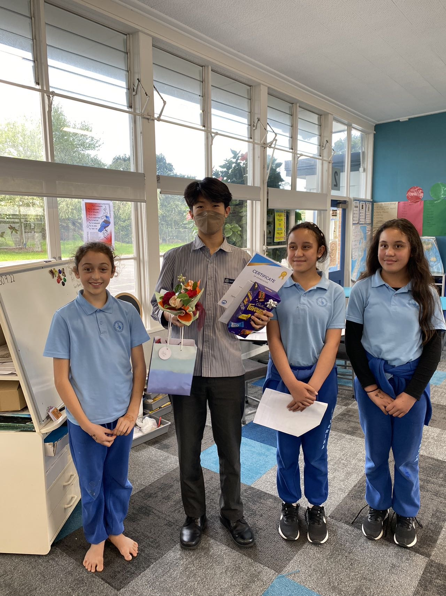

Image Gallery



2022
I had the opportunity to teach guitar lessons to a group of primary school students. This was a rewarding and enriching experience for me as I was able to share my love of music with the children and watch them grow and improve in their skills.The lessons were held once a week after school and were structured to be fun and engaging for the children. I started by teaching them the basics of guitar playing, including how to hold the guitar and strum basic chords. In addition to teaching the lessons, I also gifted each child with their own guitar. This was a special moment for the children as many of them had never owned a guitar before. Seeing their excitement and gratitude as they received their new instruments was truly heartwarming.